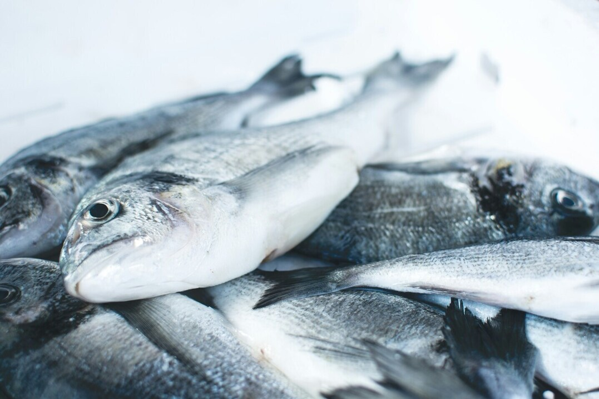

Despre noi
La Pescaria 'la Negru, transformăm fiecare masă într-o călătorie gastronomică unică.
Care sunt specialitățile casei?
Oferim preparate precum saramură de crap, hamsii crocante și midii în sos de vin alb.
Oferiți livrare la domiciliu?
Da, oferim livrare în Mangalia și zonele învecinate.
Care sunt orele de funcționare?
Suntem deschiși zilnic între orele 10:00 și 22:00.
| Nr. | Produs | Cantitate | Categoria |
|---|---|---|---|
| 1 | Saramură de crap | 145 porții | Pește |
| 2 | Hamsii crocante | Fructe de mare | |
| 3 | Midii în sos alb | 90 porții | Fructe de mare |
| Total pește | 210 porții | Pește | |
| Date valabile pentru luna mai 2025. Ultima actualizare: 1 iunie 2025. | |||
Conținut suplimentar – Oferta noastră
Oferta noastră
Meniul nostru este o adevărată sărbătoare a gusturilor marine! De la preparate clasice precum saramura de crap și hamsii crocante, la delicii rafinate precum carpaccio de ton și midii în sos de vin alb, avem ceva pentru fiecare iubitor de pește.
Prospețime garantată
Ne aprovizionăm zilnic direct de la pescarii locali, pentru a garanta prospețimea fiecărui preparat. Nu servim pește congelat.

Contact
Vrei să te bucuri de o experiență culinară autentică?
Adresă: Str. Pescărușului, nr. 10, Mangalia
Telefon: 0723 456 789